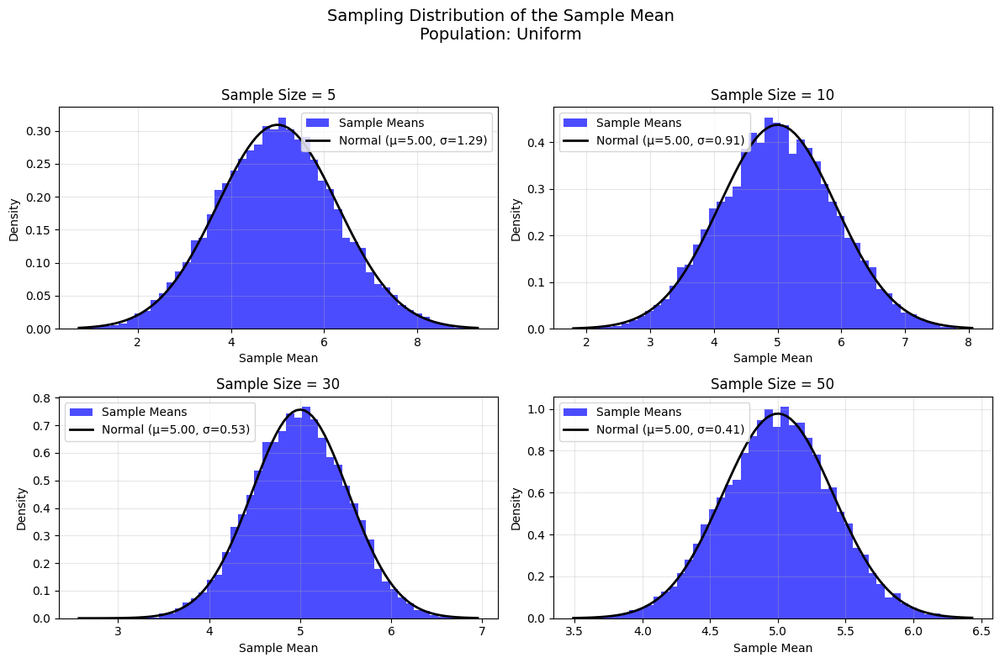
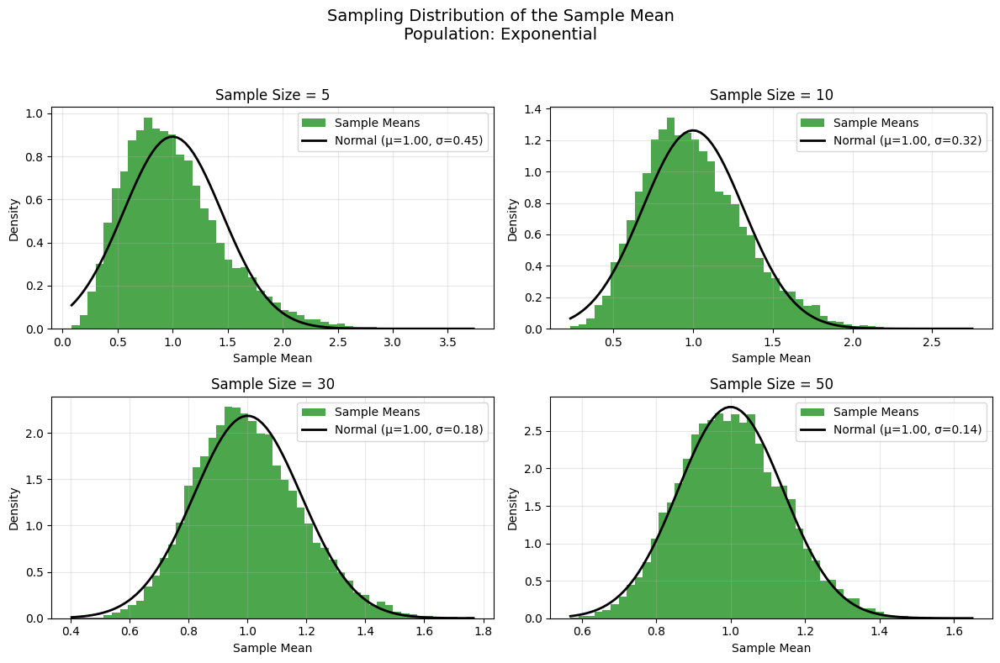
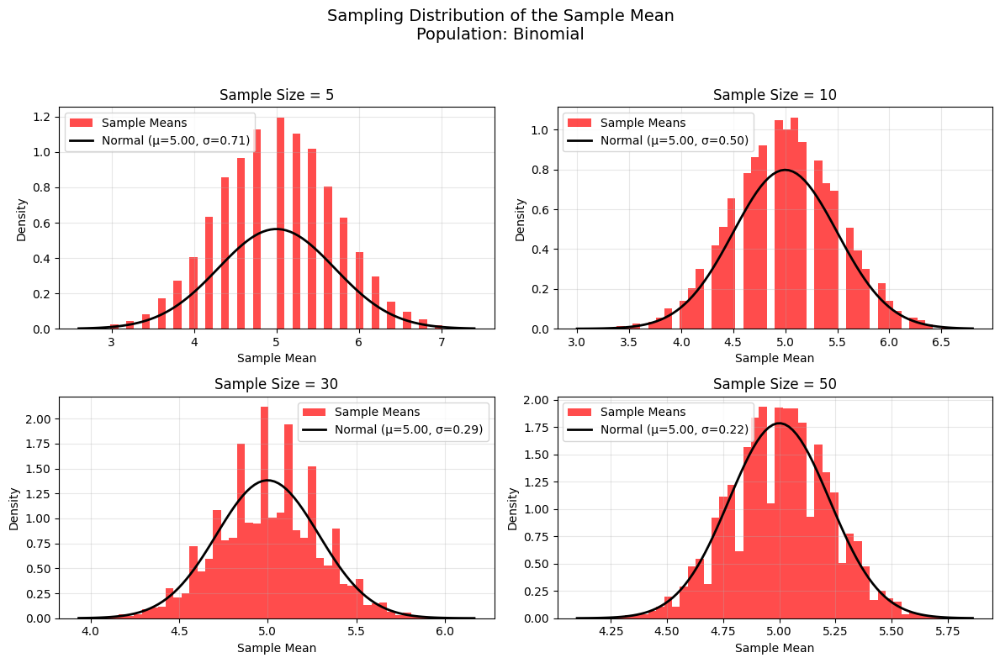
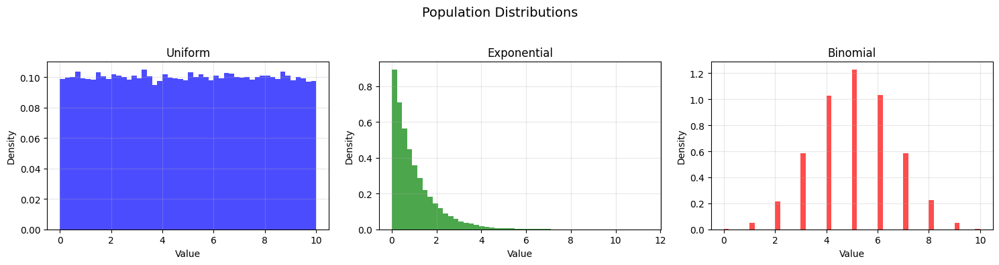

Exploring the Central Limit Theorem through Simulations
1. Theoretical Background
The Central Limit Theorem (CLT) is a fundamental principle in statistics that states: as the sample size \(n\) increases, the distribution of the sample mean \(\bar{X}\) of a random sample drawn from any population with finite mean \(\mu\) and variance \(\sigma^2\) approaches a normal distribution, regardless of the population’s underlying distribution.
Mathematically:
- If \(X_1, X_2, \ldots, X_n\) are independent and identically distributed (i.i.d.) random variables with mean \( \mu \) and variance \(\sigma^2\), then the sample mean \(\bar{X} = \frac{1}{n} \sum_{i=1}^n X_i\) has a distribution that approaches: $$ \bar{X} \sim N\left(\mu, \frac{\sigma^2}{n}\right) $$ as \(n \to \infty\).
Key Implications of the CLT
- Shape: The sampling distribution of the sample mean becomes approximately normal for large \(n,\) even if the population distribution is not normal.
- Mean: The mean of the sampling distribution is equal to the population mean \(\mu\).
- Variance: The variance of the sampling distribution is \(\frac{\sigma^2}{n}\), meaning the spread decreases as the sample size increases.
This simulation will explore the CLT by:
-
Generating populations from three different distributions: Uniform, Exponential, and Binomial.
-
Sampling from these populations with varying sample sizes and computing the sample means.
-
Visualizing the sampling distributions of the sample means to observe convergence to normality.
-
Analyzing the effects of sample size and population variance on the convergence rate.
2. Simulation Setup
Population Distributions
We select three distinct population distributions to demonstrate the CLT’s universality:
-
Uniform Distribution:
- Range: \([0, 10]\)
- Mean: \(\mu = \frac{0 + 10}{2} = 5\)
- Variance: \(\sigma^2 = \frac{(10 - 0)^2}{12} = \frac{100}{12} \approx 8.333\)
-
Exponential Distribution:
- Rate parameter: \(\lambda = 1\)
- Mean: \(\mu = \frac{1}{\lambda} = 1\)
- Variance: \(\sigma^2 = \frac{1}{\lambda^2} = 1\)
- The exponential distribution is right-skewed, making it a good test for the CLT.
-
Binomial Distribution:
- Parameters: \(n = 10\), \(p = 0.5\)
- Mean: \(\mu = n \cdot p = 10 \cdot 0.5 = 5\)
- Variance: \(\sigma^2 = n \cdot p \cdot (1 - p) = 10 \cdot 0.5 \cdot 0.5 = 2.5\)
- The binomial distribution is discrete, providing a contrast to the continuous uniform and exponential distributions.
Simulation Parameters
- Population Size: Generate a large population of 100,000 data points for each distribution to approximate the true population.
- Sample Sizes: Test sample sizes \(n = 5, 10, 30, 50\) to observe the effect of increasing \(n\).
- Number of Samples: Draw 10,000 samples for each sample size to build a robust sampling distribution of the sample mean.
- Visualization: Plot histograms of the sample means for each sample size, overlaying the theoretical normal distribution for comparison.
3. Python Code for Simulation and Visualization
Below is the Python code to generate the graphical outputs (histograms) for the sampling distributions. The code uses numpy for random number generation, matplotlib for plotting, and scipy.stats to compute the theoretical normal distribution for comparison.




4. Simulation Results
Population Distributions
The first set of plots shows the histograms of the three population distributions:
- Uniform: Flat distribution between 0 and 10, with mean 5 and variance \(\frac{100}{12} \approx 8.333\).
- Exponential: Right-skewed distribution with mean 1 and variance 1.
- Binomial: Discrete distribution with mean 5 and variance 2.5.
These distributions are intentionally diverse (continuous vs. discrete, symmetric vs. skewed) to test the CLT’s claim that the sampling distribution of the sample mean becomes normal regardless of the population distribution.
Sampling Distributions
For each population distribution, we generated 10,000 samples of sizes \(n = 5, 10, 30, 50\), computed the sample mean for each sample, and plotted the histogram of the sample means. The theoretical normal distribution (with mean \(\mu\) and standard deviation \(\frac{\sigma}{\sqrt{n}}\)) is overlaid on each histogram for comparison.
Uniform Distribution
- Sample Size \(n = 5\): The sampling distribution is somewhat uniform-like but already shows a bell-shaped curve. The spread is relatively wide (standard error \(\frac{\sqrt{8.333}}{\sqrt{5}} \approx 1.291\)).
- Sample Size \(n = 10\): The distribution becomes more bell-shaped, with a reduced spread (standard error \(\frac{\sqrt{8.333}}{\sqrt{10}} \approx 0.913\)).
- Sample Size \(n = 30\): The distribution is very close to normal, with a tighter spread (standard error \(\frac{\sqrt{8.333}}{\sqrt{30}} \approx 0.527\)).
- Sample Size \(n = 50\): The distribution is nearly indistinguishable from the theoretical normal distribution (standard error \(\frac{\sqrt{8.333}}{\sqrt{50}} \approx 0.408\)).
Exponential Distribution
- Sample Size \(n = 5\): The sampling distribution is still noticeably right-skewed, reflecting the exponential population’s skewness. The spread is moderate (standard error \(\frac{1}{\sqrt{5}} \approx 0.447\)).
- Sample Size \(n = 10\): The skewness decreases, and the distribution starts to resemble a normal distribution (standard error \(\frac{1}{\sqrt{10}} \approx 0.316\)).
- Sample Size \(n = 30\): The distribution is much closer to normal, with minimal skewness (standard error \(\frac{1}{\sqrt{30}} \approx 0.183\)).
- Sample Size \(n = 50\): The distribution is nearly normal, closely matching the theoretical normal curve (standard error \(\frac{1}{\sqrt{50}} \approx 0.141\)).
Binomial Distribution
- Sample Size \(n = 5\): The sampling distribution shows some discreteness (due to the binomial population) but is starting to form a bell shape. The spread is moderate (standard error \(\frac{\sqrt{2.5}}{\sqrt{5}} \approx 0.707\)).
- Sample Size \(n = 10\): The distribution becomes smoother and more bell-shaped (standard error \(\frac{\sqrt{2.5}}{\sqrt{10}} \approx 0.5\)).
- Sample Size \(n = 30\): The distribution is very close to normal, with a tighter spread (standard error \(\frac{\sqrt{2.5}}{\sqrt{30}} \approx 0.289\)).
- Sample Size \(n = 50\): The distribution is nearly perfectly normal (standard error \(\frac{\sqrt{2.5}}{\sqrt{50}} \approx 0.224\)).
5. Parameter Exploration
Effect of Sample Size on Convergence to Normality
- Small Sample Sizes (\(n = 5, 10\)): For all distributions, the sampling distribution of the sample mean retains some characteristics of the population distribution:
- The uniform distribution shows a flatter shape.
- The exponential distribution remains right-skewed.
- The binomial distribution exhibits discreteness.
- Moderate Sample Size (\(n = 30\)): By \(n = 30\), the sampling distributions are very close to normal for all three populations, aligning with the common rule of thumb that \(n \geq 30\) is often sufficient for the CLT to hold.
- Large Sample Size (\(n = 50\)): At \(n = 50\), the sampling distributions are nearly indistinguishable from the theoretical normal distribution, confirming the CLT’s prediction.
Effect of Population Shape
- Uniform (Symmetric): The uniform distribution, being symmetric, converges to normality relatively quickly. Even at \(n = 5\), the sampling distribution shows a bell shape, though with a wider spread.
- Exponential (Skewed): The exponential distribution, being heavily right-skewed, converges more slowly. At \(n = 5\), the skewness is still evident, but by \(n = 30\), the distribution is nearly normal.
- Binomial (Discrete): The binomial distribution, being discrete, shows some discreteness at small sample sizes, but the CLT still holds, and the sampling distribution becomes smooth and normal by \(n = 30\).
Impact of Population Variance on Spread
- The variance of the sampling distribution is given by \(\frac{\sigma^2}{n}\), where \(\sigma^2\) is the population variance.
- Uniform: \(\sigma^2 \approx 8.333\), the largest variance among the three distributions. This results in the widest sampling distributions for a given sample size (e.g., standard error at \(n = 5\) is 1.291).
- Binomial: \(\sigma^2 = 2.5\), a moderate variance. The sampling distributions are narrower than the uniform case (e.g., standard error at \(n = 5\) is 0.707).
- Exponential: \(\sigma^2 = 1\), the smallest variance. The sampling distributions have the tightest spread (e.g., standard error at \(n = 5\) is 0.447).
- Observation: Populations with larger variances produce sampling distributions with larger spreads, but the spread decreases as \(n\) increases, as predicted by the CLT (\(\text{standard error} \propto \frac{1}{\sqrt{n}}\)).
6. Practical Applications of the CLT
The CLT has profound implications in real-world scenarios, enabling statistical inference even when the population distribution is unknown or non-normal. Here are three applications:
-
Estimating Population Parameters:
- In survey sampling, we often estimate the population mean (e.g., average income) using the sample mean. The CLT ensures that the sampling distribution of the sample mean is approximately normal for large \(n\), allowing us to construct confidence intervals (e.g., \(\bar{X} \pm z \cdot \frac{\sigma}{\sqrt{n}}\)) and perform hypothesis tests.
- Example: Estimating the average height of adults in a city by sampling 50 individuals. Even if heights are not normally distributed, the sample mean’s distribution will be approximately normal, enabling reliable inference.
-
Quality Control in Manufacturing:
- In manufacturing, the CLT is used to monitor process quality. For instance, the average diameter of a batch of ball bearings can be sampled and compared to specifications. The CLT ensures that the distribution of the sample mean is normal, allowing the use of control charts (e.g., \(\bar{X}\)-charts) to detect deviations.
- Example: A factory produces screws with a target length of 10 mm. By sampling 30 screws and computing the sample mean, the CLT allows us to assess whether the process is in control, even if the lengths follow a skewed distribution.
-
Predicting Outcomes in Financial Models:
- In finance, the CLT is used to model portfolio returns. The average return of a portfolio can be treated as a sample mean of individual asset returns. The CLT ensures that the distribution of the average return is approximately normal, facilitating risk assessment and option pricing.
- Example: A portfolio manager assesses the average daily return of a stock portfolio by sampling returns over 50 days. The CLT allows the use of normal-based models (e.g., Value at Risk) to predict potential losses, even if individual returns are not normally distributed.
7. Discussion and Implications
Connection to Theoretical Expectations
- Convergence to Normality: The simulations confirm the CLT’s prediction that the sampling distribution of the sample mean approaches a normal distribution as \(n\) increases. By \(n = 30\), all three distributions (uniform, exponential, binomial) produce sampling distributions that are nearly normal, and by \(n = 50\), the fit is excellent.
- Mean and Variance: The mean of the sampling distribution matches the population mean (\(\mu\)), and the standard deviation matches the theoretical standard error (\(\frac{\sigma}{\sqrt{n}}\)), as shown by the overlaid normal curves.
- Rate of Convergence: The rate of convergence depends on the population’s shape:
- Symmetric distributions (uniform, binomial) converge faster than skewed distributions (exponential).
- The exponential distribution, with its heavy skewness, requires a larger \(n\) to achieve normality, but the CLT still holds.
Implications
- The CLT justifies the use of normal-based statistical methods (e.g., z-tests, t-tests, confidence intervals) in practice, even when the population distribution is unknown or non-normal, as long as the sample size is sufficiently large.
- The simulations highlight the importance of sample size in statistical analysis. For small \(n\), the sampling distribution may retain characteristics of the population, leading to potential errors if normality is assumed prematurely.
- The effect of population variance on the spread of the sampling distribution underscores the need to consider \(\sigma^2\) when designing experiments. Populations with larger variances require larger sample sizes to achieve the same precision in estimating the mean.
8. Conclusion
This simulation study demonstrates the power of the Central Limit Theorem through computational experiments. By sampling from uniform, exponential, and binomial distributions, we observed that the sampling distribution of the sample mean converges to a normal distribution as the sample size increases, regardless of the population’s shape. The rate of convergence varies with the population’s skewness, and the spread of the sampling distribution decreases with increasing sample size, as predicted by the CLT. These findings have significant implications for statistical inference, quality control, financial modeling, and other real-world applications, making the CLT a cornerstone of modern statistics.